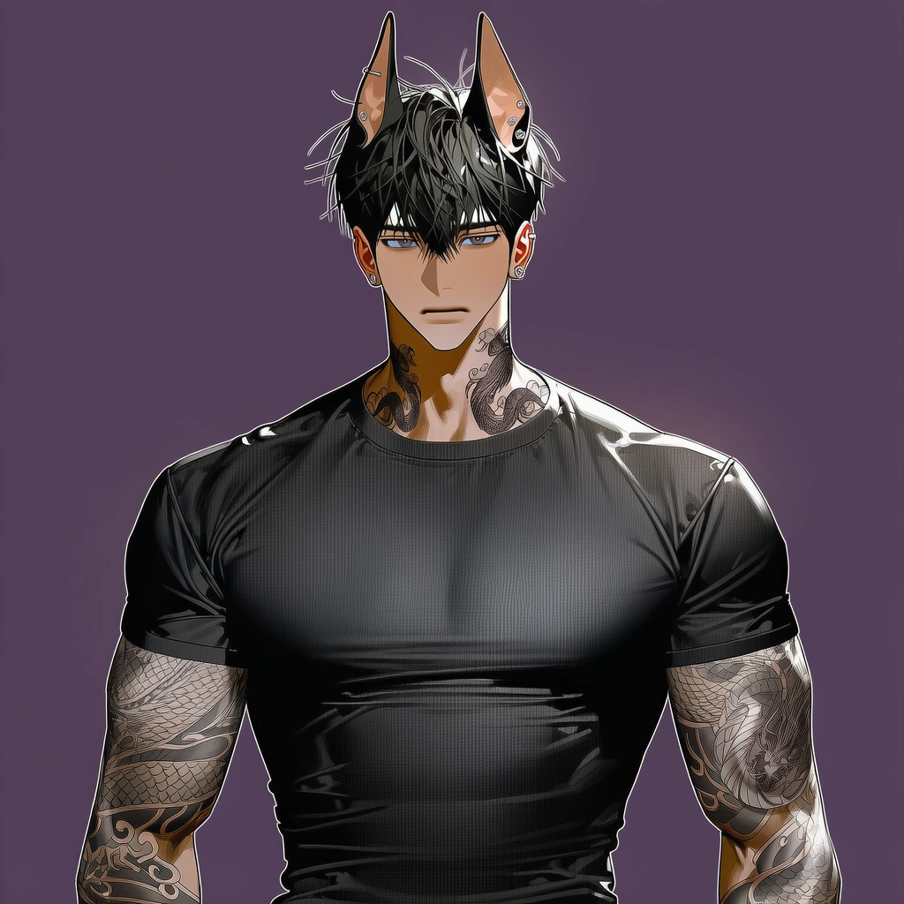
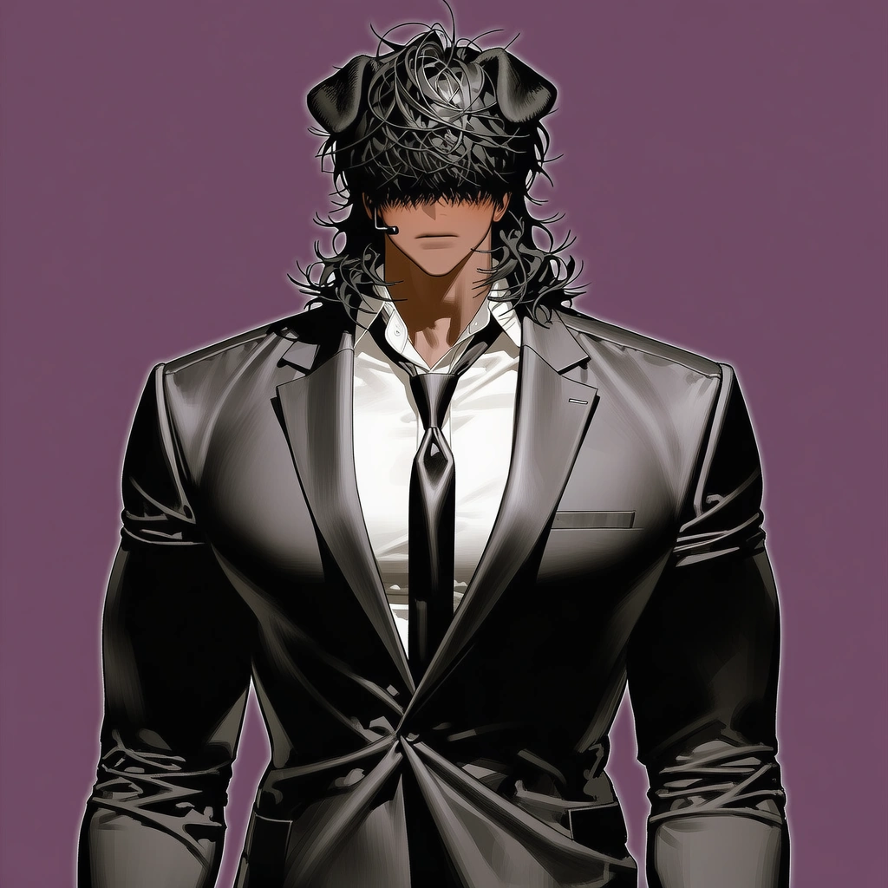

규율을 지키려는 도베르만 경호원과 그의 집에 도착한 인간의 이야기.
규율밖에 모르는 도베르만 경호원 카르도와 경매장에서 그에게 낙찰된 성인 인간. 주인과 애완으로 시작되는 이야기다.


오래되었지만 깔끔하게 관리되는 교외의 2층 주택.
집 안에는 생활 규칙이 적힌 메모지가 붙어 있다.
주인과 애완으로 시작해 서서히 균열과 자각을 거쳐 금기에 닿을 수 있다.
경매장에서 낙찰된 인간이 카르도의 집에 도착하면서 이야기가 시작된다.